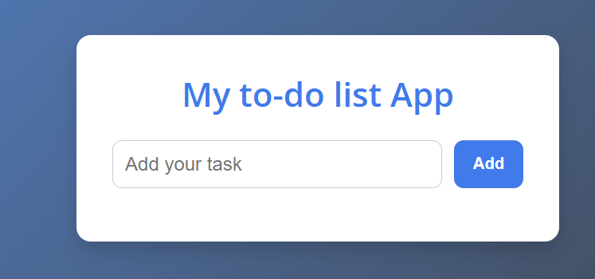
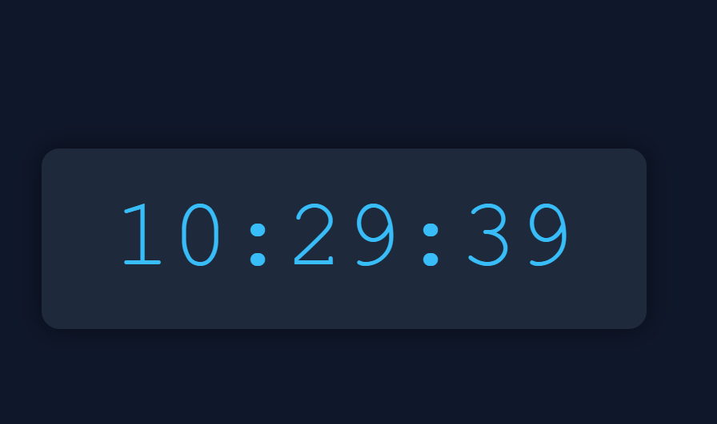
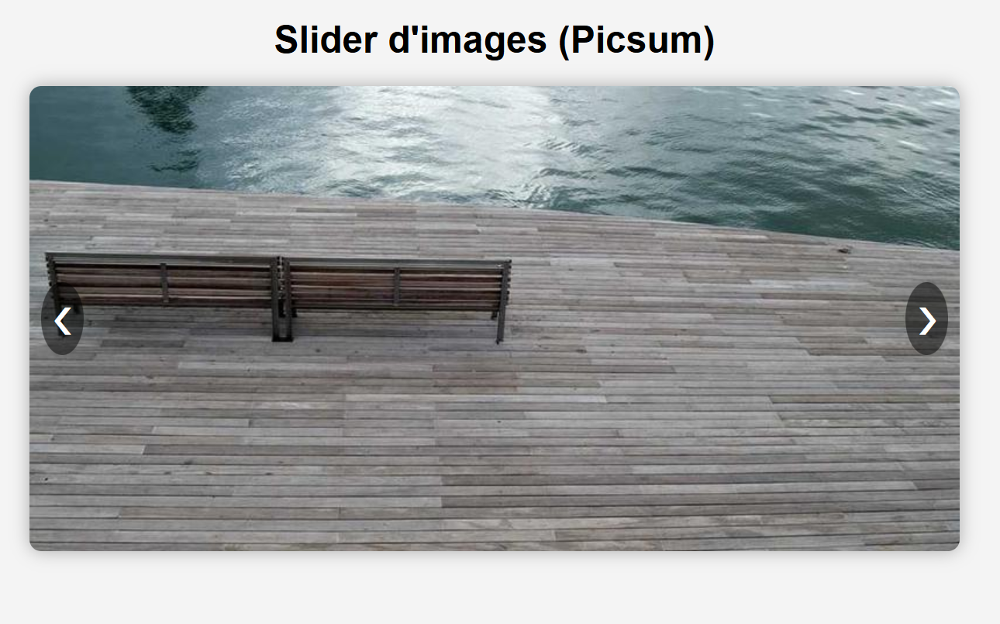

ToDo Liste
Une application simple pour gérer ses tâches quotidiennes, avec stockage local, suppression, et validation visuelle.
Voir le projet

Horloge numérique
Une horloge animée en temps réel utilisant JavaScript pour afficher l’heure, les minutes et les secondes en direct.
Voir le projet

Slider d’images
Un carousel responsive qui affiche plusieurs images avec transition automatique ou manuelle. Parfait pour un portfolio ou une galerie.
Voir le projet